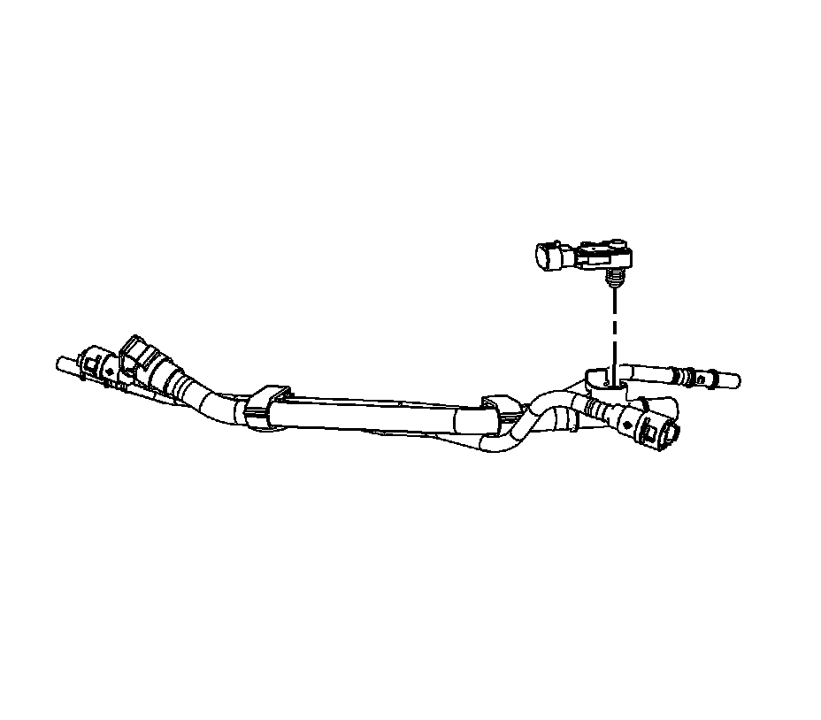

Fuel Tank Pressure Sensor Replacement (2500 Series)
FUEL TANK PRESSURE SENSOR REPLACEMENT (2500 Series)
REMOVAL PROCEDURE
IMPORTANT: Clean all fuel and evaporative emission (EVAP) line connections and surrounding areas prior to disconnecting the lines in order to avoid possible fuel and/or EVAP system contamination.

1. Remove the intermediate fuel and evaporative emission (EVAP) lines.
2. Gently pry straight up, in order to remove the fuel pressure sensor.
INSTALLATION PROCEDURE
1. Lubricate the seal on the fuel pressure sensor.
2. Press the fuel pressure sensor into the line.
3. Install the intermediate fuel and EVAP lines.